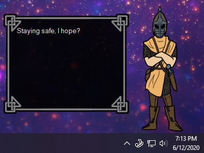
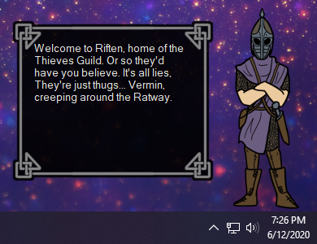
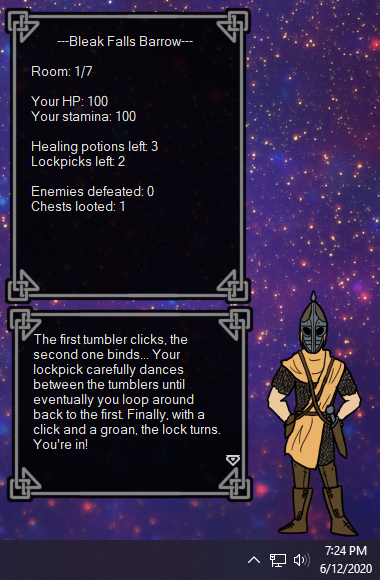

Skyrim Guard
The Skyrim Guard is a WIP ghost that's almost ready for release! He doesn't have most of the usual ghost functionality, all he really does is sit on your desktop and spout random lines of guard dialogue at you. But, he does have different shells for every hold, and dynamic dialogue based on which hold you're in! He also has a proof of concept quest you can play if you're in Whiterun hold. I hope to flesh it out and make a large quest system in the future!
